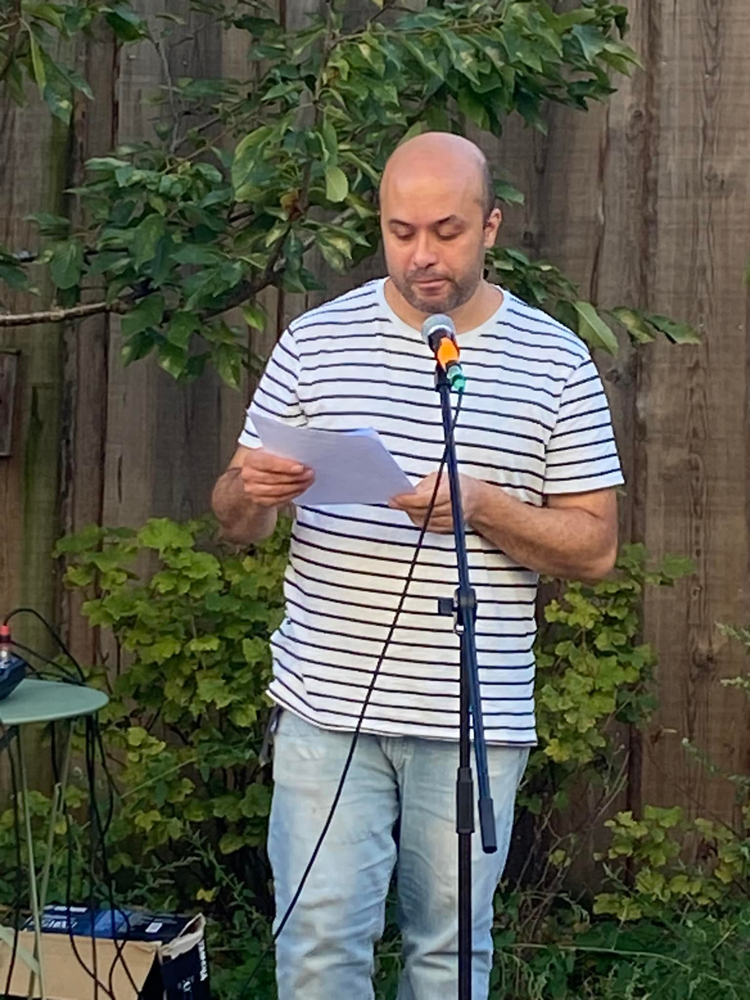

Jef le Cri est un voyage à travers la poésie et la musique. Chaque mot, chaque note est un cri du cœur, une invitation à explorer des émotions intenses, des idées profondes et des réflexions personnelles.
Explorez mes poèmes, mes créations musicales et découvrez un peu de moi à travers chaque œuvre. Ce site est dédié à ceux qui cherchent à s'évader et à ressentir à travers l'art.
Les échos du silence, des mots jamais dits, S'éteignent dans l'ombre, là où le vent les fuit. Mais il reste la trace, dans la mémoire du temps, Chaque vers écrit, chaque cri résonnant.